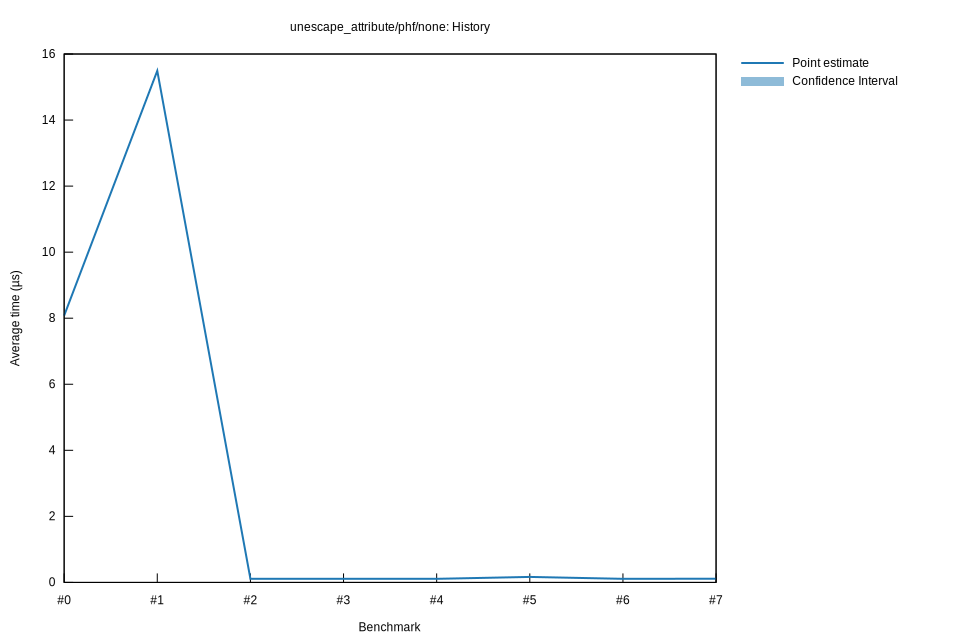

# 42025-10-29T22:29:34-07:00
|
Lower Bound |
Estimate |
Upper Bound |
| Value: |
0.11µs |
0.11µs |
0.11µs |
| Throughput: |
146.24GiB/s |
145.72GiB/s |
145.16GiB/s |
| Change in Value: |
-1.2939% |
-0.6746% |
-0.0485% |
| Change in Throughput: |
+1.3108% |
+0.6792% |
+0.0485% |
No change in performance detected.
# 32025-10-29T22:23:00-07:00
|
Lower Bound |
Estimate |
Upper Bound |
| Value: |
0.11µs |
0.11µs |
0.11µs |
| Throughput: |
145.32GiB/s |
144.60GiB/s |
143.81GiB/s |
| Change in Value: |
-0.9107% |
-0.3069% |
+0.3470% |
| Change in Throughput: |
+0.9190% |
+0.3078% |
-0.3458% |
Change within noise threshold.
# 22025-10-29T19:47:23-07:00
|
Lower Bound |
Estimate |
Upper Bound |
| Value: |
0.11µs |
0.11µs |
0.11µs |
| Throughput: |
145.12GiB/s |
144.54GiB/s |
143.95GiB/s |
| Change in Value: |
-99.304% |
-99.297% |
-99.291% |
| Change in Throughput: |
+14266% |
+14125% |
+14009% |
No change in performance detected.
# 12025-10-29T19:04:12-07:00
|
Lower Bound |
Estimate |
Upper Bound |
| Value: |
15.44µs |
15.49µs |
15.55µs |
| Throughput: |
1.02GiB/s |
1.02GiB/s |
1.01GiB/s |
| Change in Value: |
+89.713% |
+91.898% |
+94.239% |
| Change in Throughput: |
-47.289% |
-47.889% |
-48.517% |
No change in performance detected.
# 02025-10-26T16:48:27-07:00
|
Lower Bound |
Estimate |
Upper Bound |
| Value: |
8.06µs |
8.08µs |
8.10µs |
| Throughput: |
1.95GiB/s |
1.95GiB/s |
1.94GiB/s |